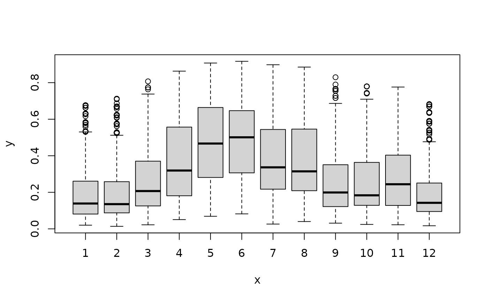

R/PrecipitationOccurenceModel.R
PrecipitationOccurrenceModel.RdThis functions creates a stochastic Occurrence Model for the variable x (PrecipitationOccurrenceModel S3 object) through a calibration from observed data.
PrecipitationOccurrenceModel(
x,
exogen = NULL,
p = 1,
monthly.factor = NULL,
valmin = 0.5,
id.name = NULL,
...
)variable utilized for the auto-regression of its occurrence, e.g. daily precipitaton
exogenous predictors
auto-regression order
vector of factors indicating the month of the days
minimum admitted value for daily precipitation amount
identification name of the station
further arguments
The function returns a PrecipitationOccurrenceModel-class S3 object containing the following elements:
predictor data frame containg the endogenous and exogenous predictors of the logistic regression model;
glm the genaralized liner model using for the logistic regression;
p auto-regression order
valmin minimum admitted value for daily precipitation amount
library(RGENERATEPREC)
data(trentino)
year_min <- 1961
year_max <- 1990
period <- PRECIPITATION$year>=year_min & PRECIPITATION$year<=year_max
period_temp <- TEMPERATURE_MAX$year>=year_min & TEMPERATURE_MAX$year<=year_max
prec_mes <- PRECIPITATION[period,]
Tx_mes <- TEMPERATURE_MAX[period_temp,]
Tn_mes <- TEMPERATURE_MIN[period_temp,]
accepted <- array(TRUE,length(names(prec_mes)))
names(accepted) <- names(prec_mes)
for (it in names(prec_mes)) {
acc <- TRUE
acc <- (length(which(!is.na(Tx_mes[,it])))==length(Tx_mes[,it]))
acc <- (length(which(!is.na(Tn_mes[,it])))==length(Tn_mes[,it])) & acc
accepted[it] <- (length(which(!is.na(prec_mes[,it])))==length(prec_mes[,it])) & acc
}
valmin <- 1.0
prec_mes <- prec_mes[,accepted]
Tx_mes <- Tx_mes[,accepted]
Tn_mes <- Tn_mes[,accepted]
prec_occurrence_mes <- prec_mes>=valmin
station <- names(prec_mes)[!(names(prec_mes) %in% c("day","month","year"))]
it <- station[2]
vect <- Tx_mes[,it]-Tn_mes[,it]
months <- factor(prec_mes$month)
model <- PrecipitationOccurrenceModel(x=prec_mes[,it],exogen=vect,monthly.factor=months)
probs <- predict(model$glm,type="response")
plot(months[-1],probs)

newdata <- model$predictor[2000:2007,]
probs0 <- predict(model,newdata=newdata)